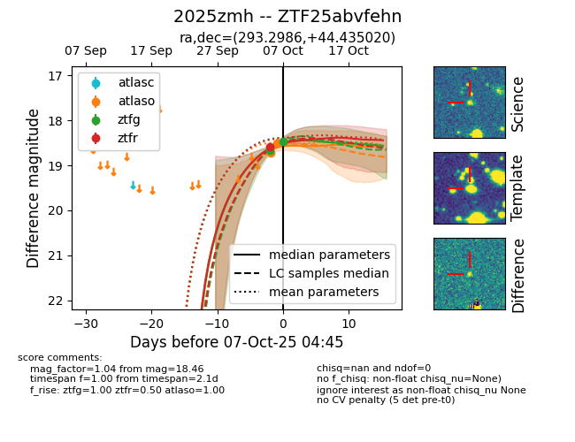
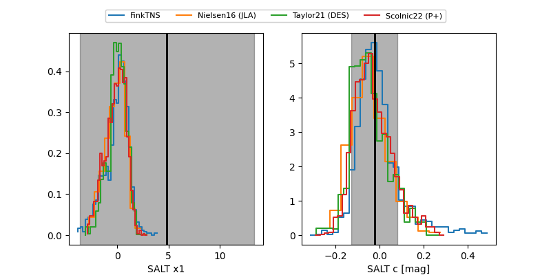

FINK: ZTF25abvfehn
Lasair: ZTF25abvfehn
ALeRCE: ZTF25abvfehn
TNS: 2025zmh
YSE: 2025zmh
ZTF25abvfehn (ztf,fink)
2025zmh (tns,yse)
equatorial (ra, dec) = (293.2986,+44.43502)
galactic (l, b) = (77.0979,+11.77621)


last atlaso=18.51, ztfg=18.46, ztfr=18.59
2 atlaso, 2 ztfg, 1 ztfr detections